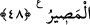

(bk. el-Burûc, 85/12). O’nun azâbına tâkat getirilmez. Yine akıllı kişiye gereken
emirlerine sarılıp nehiylerinden kaçınmak; din, din ehli, Allah’ın hükümleri, vaad ve
vaîdi/tehdîdi ile alay etmeyi terk etmek sûretiyle Allah Teâlâ’nın rızâsına koşmaktır.
Çünkü Allah, sözünde sâdık ve fiilinde sonsuz hikmet sâhibidir. Kula düşense ancak
O’na ve O’nun emrine tâzim göstermektir.
48. Nice ülkeler var ki, zulmedip dururlarken onlara mühlet verdim. Sonunda
onları yakaladım. Dönüş yalnız banadır.
“Nice ülkeler var ki,” o ülkelerin halkının çoğu, “zulmedip dururlarken” yâni
bunların yaptığı gibi cezâyı çabuklaştırmayı gerektirecek zulüm içinde oldukları halde
bunlara mühlet verdiğim gibi azâbı te’hir ederek “onlara” da “mühlet verdim. Sonunda
onları” uzun süre mühlet tanıdıktan sonra azabla “yakaladım.” Tövbe etmediklerinden
dolayı dünyada onları çetin bir azâba dûçâr ettim. “Dönüş yalnız banadır.” Yâni
herkesin dönüşü, müstakil veya müşterek olarak benden başka birisine değil, ancak
benim hükmümedir. Onun için amellerine uygun olarak onlara dilediğimi yaparım.
Burada Allah’tan mühlet tanıma (imhâl) olduğuna, fakat ihmâl olmadığına işâret
vardır. Çünkü O mühlet verir, fakat ihmâl etmez. Zâlimi bir süre zulmü içinde bırakır.
İpini geniş tutar. Mühleti uzatır. O da Allah’ın takdir kabzasından kaçıp kurtulacağı
vehmine kapılır. Aslında bu zan onun bir isteğidir. Allah onu beklemediği bir
anda/beklemediği bir yerden yakalayıverir. Pişmanlık tepesine vurur, ancak zamanı
geçmiştir. Allah’ın takdirinde yokluğu hak olan ve dönüşü Allah’a olan bir şeyin hile ve
çare ile bâkî kalması nasıl sağlanır? Kuldan olan zulüm Allah tarafından yakalanıp
cezâlandırılmaya sebeptir. Onun için kul kendi nefsinden başkasını asla ayıplamasın.
Hâfız der ki:
Sen bu kapıdan, kendi kusurun yüzünden mahrum kaldın
Kimin yüzünden ağlıyor, niçin feryâd ediyorsun?
[41]. Bk. Deylemî, hadis no: 6040
[42]. Aclûnî, I, 304
[43]. Terğîb, III, 56